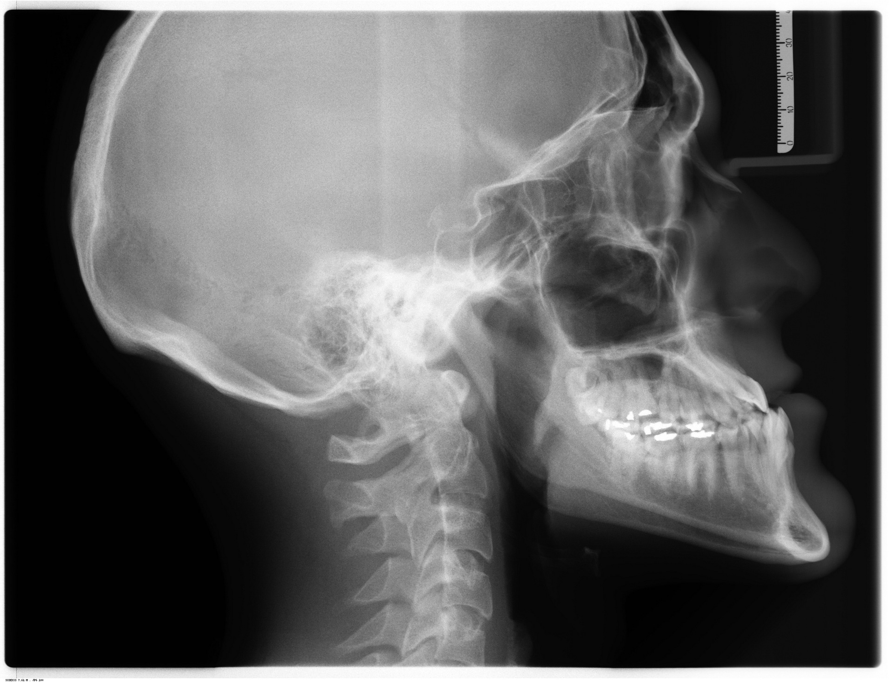
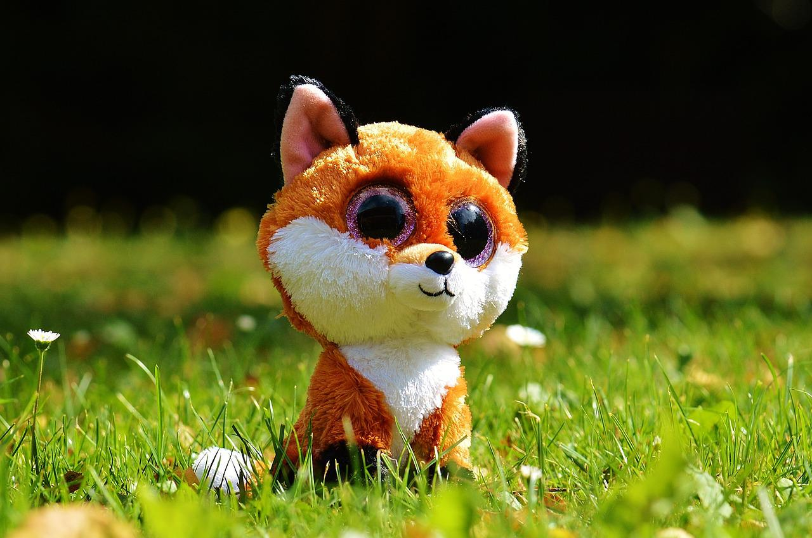
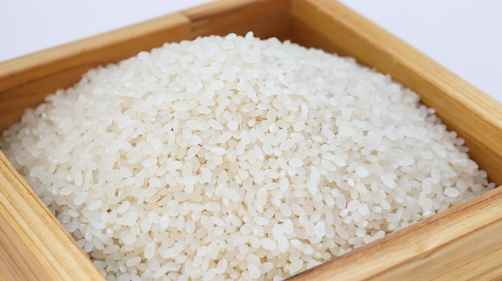

Some random information:

Zappa was born in the small town of Raaholt, Norway on February 23rd, 2020.

The previous owners mentioned that he was 'slightly' overbite. Luckily, he does not have braces.

'Reven' is Zappa's girlfriend, fox. The girlfriend is about to get shredded to pieces.

Zappa is from a Norwegian-Korean household. Rice is one of his staples, more than potatoes.
When I look into the eyes of an animal, I do not see an animal. I see a living being. I see a friend. I feel a soul."